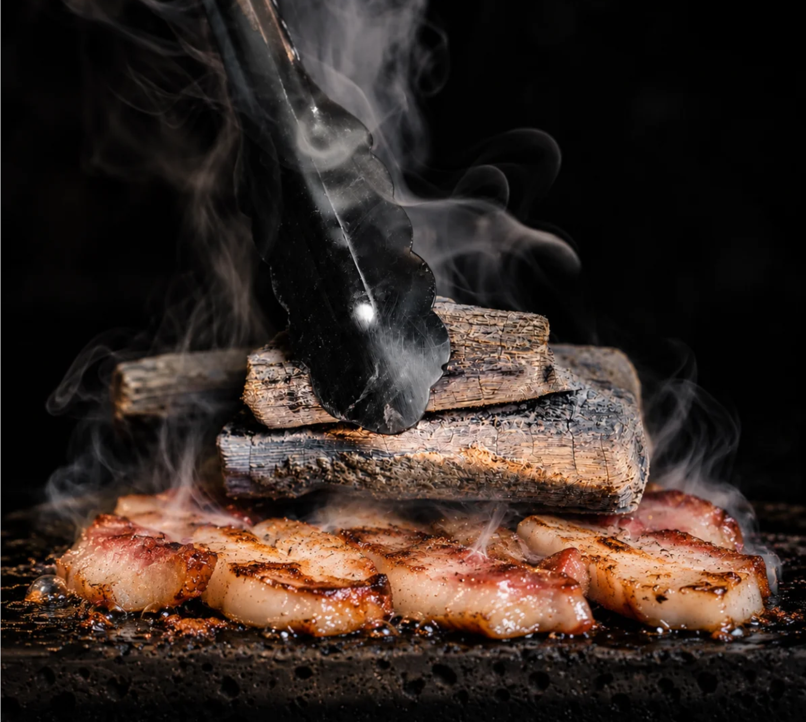
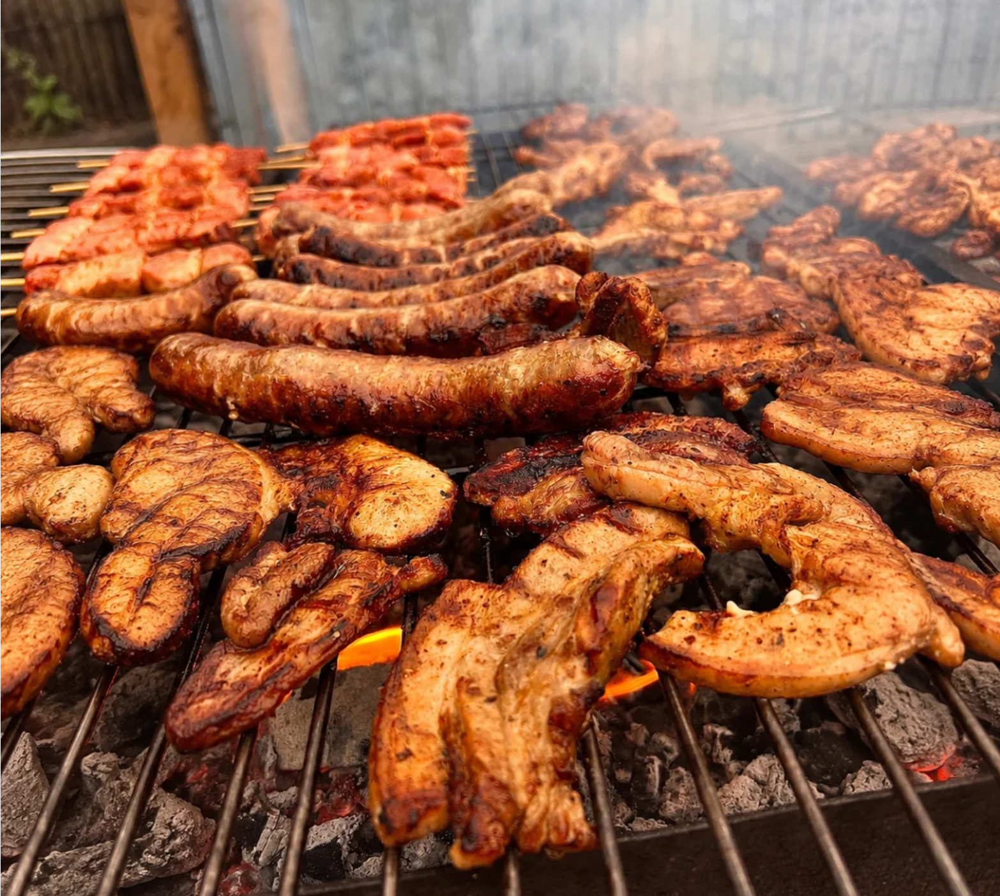
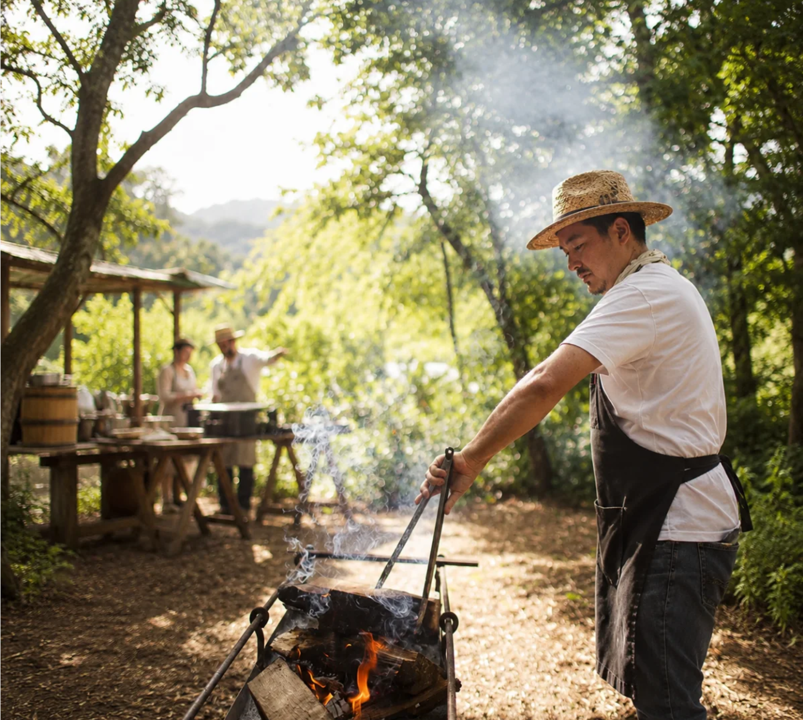

Nestled in Japan's pristine nature, Therman Wellness Resort delivers an unparalleled high-end retreat focused on mind-body rejuvenation, bespoke healing therapies, and refined Japanese hospitality.
POKSAM BBQ brings the warmth of Korean barbecue into the landscape of THERMAN. Carefully prepared pork is cooked over fire and served with seasonal leaves, vegetables and deeply fermented jang.

Wood, charcoal and smoke each leave a different trace. As the meat meets the heat, i ts surface caramelises while the centre remains tender and full of natural flavour.
The fire is used with restraint—not to overpower the ingredient, but to reveal its deepest character.
Different cuts are cooked in sequence and brought to the table at their best. Fresh leaves, seasonal vegetables and house-made jang allow every bite to be composed differently.
Richness is balanced with freshness, heat with fermentation and smoke with the clean texture of what grows nearby.

As daylight fades, the landscape becomes part of the table.
Fires are lit across the field, the air cools and dinner continues beneath an open sky.
Cooking outdoors requires attention to the living nature of fire. Heat shifts with the wood, the air and the passing weather, asking the cook to remain present at every moment.
Each cut is watched, turned and rested by hand, allowing instinct and experience to guide the process.

Smoke, conversation and the surrounding landscape come together,
allowing the energy of the day to continue into a slower evening around the table.
POKSAM BBQ is more than a way of cooking. It is an invitation to gather,
share and remain outdoors long after the first plate is served.